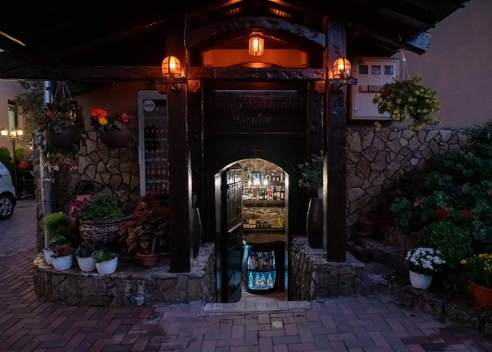
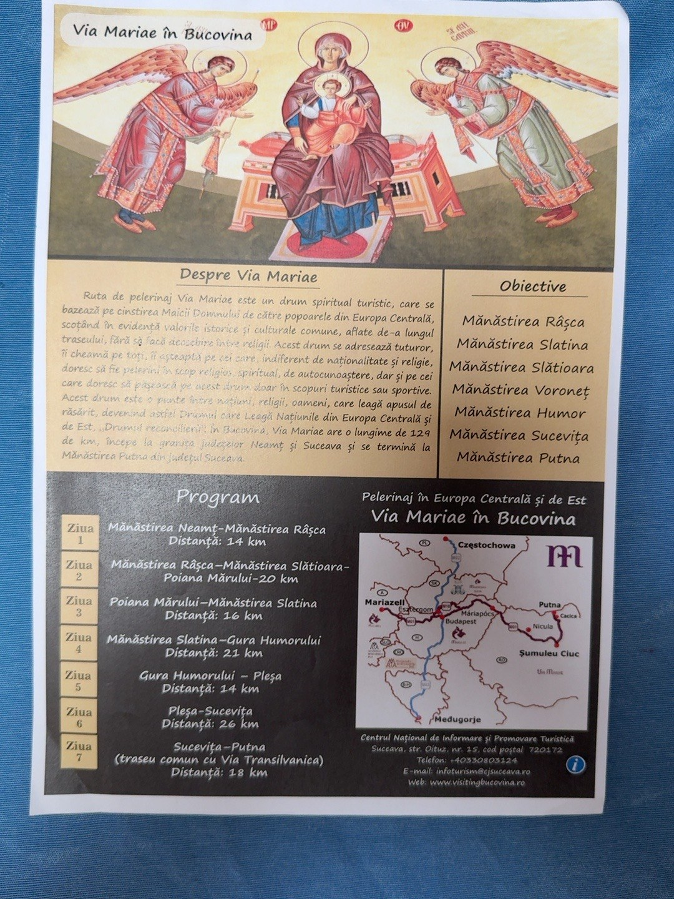
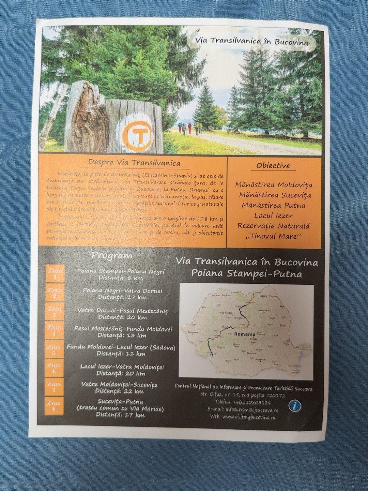

Bucovina · Câmpulung Moldovenesc
Casa Domnească Rarău
★★★★★
Rafinament, ospitalitate bucovineană și gustul autentic al locului, într-un cadru primitor la poalele Rarăului.
Rezervă un sejur✧5 camereospitalitate intimă
✧Mic dejunînceput de zi cu gust
✧Rezervare directădiscuți direct cu gazda
Sărbători de poveste în Bucovina
Oferte de Crăciun și Revelion 2026–2027
Vă invităm să petreceți sărbătorile la Casa Domnească Rarău, cu tradiții bucovinene, gastronomie și momente speciale.
🎄 Oferta de Crăciun
23–27 decembrie 2026 · 4 nopți
Cameră Standard · 2 persoane5.000 lei
Cameră Superioară · 2 persoane5.500 lei
Pachetul include:
4 nopți de cazare, cine tradiționale, pomana porcului și un mini-concert de 30 de minute susținut de grupul „Cununa Bucovinei”, cu tradiții și copii în port popular.
Ambele pachete beneficiază de asistență turistică permanentă prin ghid autorizat pentru excursii în zonă: Rarău, Transrarău și muzee locale.
🎉 Oferta de Revelion
29 decembrie 2026 – 2 ianuarie 2027 · 4 nopți
Cameră Standard · 2 persoane7.500 lei
Cameră Superioară · 2 persoane8.000 lei
Pachetul include:
4 nopți de cazare, mese festive, DJ și spectacolul de datini „Cununa Bucovinei”.
Ambele pachete beneficiază de asistență turistică permanentă prin ghid autorizat pentru excursii în zonă: Rarău, Transrarău și muzee locale.
Condiții de rezervare și plată
- Rezervarea se confirmă prin achitarea unui avans de 50% din valoarea pachetului.
- Diferența de 50% se achită în termen de maximum 30 de zile calendaristice de la data achitării avansului.
- Neachitarea diferenței în termenul menționat atrage anularea rezervării.
- Avansul achitat nu se restituie în cazul anulării rezervării sau al neîndeplinirii termenului de plată, în condițiile comunicate și acceptate la momentul rezervării.
Vă rugăm să solicitați și să citiți condițiile complete înainte de efectuarea plății. Pentru rezervări și detalii: 0787 445 908.
Bine ați venit
O experiență cu farmec domnesc
Tradiție, tihnă și ospitalitate
Casa Domnească Rarău vă întâmpină în Câmpulung Moldovenesc, în inima Bucovinei. Am pregătit un loc în care confortul, atmosfera caldă și detaliile inspirate din tradiția locală se întâlnesc pentru un sejur memorabil.
Vă invităm să descoperiți camerele pensiunii, cele două terase, crama cu decor rustic și preparatele servite cu grijă.

Odihnă și confort
Camerele noastre
Cinci camere amenajate pentru odihna dumneavoastră, potrivite atât pentru cupluri, cât și pentru familii.
✧
Cameră dublă
Două camere duble, fiecare dotată cu fotoliu extensibil.
300 lei / noapte
✧
Cameră triplă
Trei camere triple. Pentru tarif și disponibilitate, vă rugăm să ne contactați.
✧
Mic dejun inclus
Începeți ziua cu micul dejun inclus în sejur.
Bucurați-vă de fiecare clipă
Experiențe la Casa Domnească
♨
Bucătărie à la carte
Preparate gustoase, servite într-o atmosferă primitoare.
♜
Crama Domnească
Un spațiu cu farmec rustic, decor tradițional și selecție de vinuri.
☼
Două terase
Locuri plăcute pentru relaxare și clipe petrecute în aer liber.
„Bucovina se descoperă cel mai frumos atunci când te simți ca acasă.”
Oaspeții noștri ne recomandă
Aprecierea oaspeților
Ne bucurăm de încrederea și aprecierile primite pe platformele de turism. Scorurile de mai jos sunt cele comunicate de pensiune și pot fi actualizate periodic.
Google
4,9/5
Evaluări Google
Tripadvisor
5/5
Scor comunicat de pensiune
TuristInfo
10/10
Scor comunicat de pensiune
Travelminit
9,9/10
Doar pentru reputație și recenzii
În apropierea pensiunii
Descoperă frumusețea Bucovinei
De la Masivul Rarău și Codrii Seculari Slătioara la Lacul Iezer, Mocănița Huțulca, muzeele Bucovinei și satul pictat Ciocănești, descoperiți obiective naturale și culturale pentru excursii de o zi din Câmpulung Moldovenesc.

Masivul Rarău și Pietrele Doamnei
Creste calcaroase, păduri și panorame spectaculoase. Unul dintre reperele naturale emblematice ale Bucovinei.
Descoperă Masivul Rarău ↗Fotografie: Primăria Câmpulung Moldovenesc
Rarău Ski & Adventure
Pârtie de schi, telegondolă și activități montane, în funcție de sezon și condițiile meteo.
Informații despre resort ↗
Cheile Moara Dracului
Rezervație naturală cu pereți stâncoși și peisaj sălbatic, potrivită pentru iubitorii de natură.
Descoperă cheile ↗
Mănăstirea Voroneț
Celebră pentru frescele exterioare și albastrul emblematic al picturii medievale moldovenești.
Află mai multe ↗
Mănăstirea Moldovița
Ansamblu monahal renumit pentru arhitectura și pictura exterioară din secolul al XVI-lea.
Află mai multe ↗
Mănăstirea Sucevița
O bijuterie a artei medievale bucovinene, cu ziduri pictate și o incintă fortificată impresionantă.
Află mai multe ↗
Lacul Iezer – Sadova
Lac montan înconjurat de păduri, în Obcina Feredeului, potrivit pentru o oprire liniștită în natură.
Vezi localizarea ↗Fotografie: Ionel Curcan · Wikimedia Commons, CC BY-SA 4.0
Mocănița Huțulca – Moldovița
O călătorie cu trenul pe linie îngustă prin peisajele Bucovinei. Verificați cursele și programul înainte de plecare.
Program și bilete ↗Fotografie: Jan Pešula · Wikimedia Commons, CC0🥚
Muzeul Oului – Vama
O colecție impresionantă de ouă încondeiate din Bucovina și din numeroase țări, prezentată de prof. Letiția Orșivschi.
Site-ul muzeului ↗Strada Gării nr. 20, Vama. Confirmați programul înainte de vizită.🎎
Muzeul Păpușilor
Obiectiv inclus în recomandările gazdelor. Pentru a evita o deplasare greșită, confirmați localizarea și programul înainte de plecare.
Caută localizarea ↗🏍️
Expo Moto Bucovina – Horodnic de Jos
Expoziție de motociclete și automobile, cu modele din România și din alte țări, pentru pasionații de motoare.
Vezi localizarea ↗Str. Principală nr. 2B. Confirmați accesul și programul la organizator.
Punctul de belvedere Rarău – Skywalk Piatra Șoimului
Punct panoramic amenajat pentru admirarea munților și a văilor din jurul Câmpulungului.
Informații despre Skywalk ↗Fotografie: Primăria Câmpulung Moldovenesc🌄
Panorama Bucovinei – Sadova
Loc cu priveliști largi asupra dealurilor Bucovinei și spații amenajate pentru relaxare și fotografii. Accesul pentru vizitatori se confirmă telefonic.
Detalii și acces ↗🌿
Rezervația Tinovul Mare – Poiana Stampei
Turbărie montană cu vegetație specifică zonelor umede și podeț de vizitare. Respectați traseul amenajat și regulile rezervației.
Vezi localizarea ↗🦌
Crescătoria de cerbi – Dârmoxa
Țarc de cerbi din Munții Bistriței, în zona Broșteni, unde vizitatorii pot observa animalele de la punctele amenajate.
Vezi localizarea ↗Vizita se face cu acordul administratorilor; confirmați tariful, accesul și condițiile.🐎
Herghelia Lucina – caii huțuli
Herghelie de stat cunoscută pentru creșterea și conservarea calului huțul, în peisajul montan al Obcinilor Bucovinei.
Informații oficiale ↗Este herghelie, nu rezervație naturală. Confirmați condițiile de vizitare.🏡
Satul pictat Ciocănești
Localitate devenită muzeu în aer liber, cunoscută pentru casele decorate cu motive tradiționale inspirate din cămăși și ouă încondeiate.
Descoperă muzeul etnografic ↗💎
Lacul de Smarald – Mina Mănăilă
Un loc spectaculos semnalat în zona fostei exploatări miniere Mănăilă. Verificați accesul legal și condițiile de siguranță; nu intrați în galerii sau pe terenuri interzise.
Caută localizarea ↗🌲
Codrii Seculari Slătioara
Pădure seculară de o valoare naturală excepțională, parte a patrimoniului mondial UNESCO, pe versantul estic al Masivului Rarău.
Informații de la Direcția Silvică ↗
Adrenalină, natură și experiențe memorabile
Bucovina în mișcare – aventură pentru toate gusturile
De la zborul deasupra Obcinelor până la coborâri pe șine, rafting pe Bistrița și ture cu bicicleta pe Via Transilvanica, descoperiți Bucovina activ. Casa Domnească Rarău este punctul dumneavoastră de plecare pentru experiențe în întreg județul Suceava.

Mega Tiroliana – Pasul Palma
Zbor spectaculos deasupra peisajelor montane din zona Ciumârna–Vatra Moldoviței. Operatorul publică o lungime de aproximativ 1.140 m și zboruri în poziție clasică sau Superman. Verificați condițiile și programul înainte de plecare.
Informații și program la operator ↗
Mega Tiroliana Bucovina – Gura Humorului
Traseu de aproximativ 2,2 km, cu plecare din zona Pârtiei Șoimul și sosire în Parcul Ariniș. O experiență de adrenalină cu panoramă asupra pădurii și Văii Moldovei.
Detalii, condiții și rezervări la operator ↗
Forest Coaster – bobul de viteză
Bob pe șine prin pădure, lângă Pârtia Șoimul din Gura Humorului. Traseul are aproximativ 1,4 km, cu spirale și viteză controlată de pasager.
Site oficial, program și informații ↗
Parapantă în Bucovina
Zboruri tandem și experiențe aeriene în zona Câmpulung Moldovenesc și Gura Humorului, în funcție de vreme, vânt și disponibilitatea instructorilor.
Informații despre zboruri tandem ↗
Rafting cu pluta pe Valea Bistriței
O aventură pe apă, în grup, pe râul Bistrița, în zona Broșteni–Crucea. Activitatea se desfășoară cu ghizi și echipament de siguranță, în funcție de debit și condițiile meteo.
Descoperă experiențe de rafting în Bucovina ↗
Via Transilvanica cu bicicleta
Descoperiți ținutul Bucovinei pe două roți, pe drumuri de țară, poteci și segmente potrivite ciclismului. Segmentul local poate fi parcurs etapizat; verificați suprafața și accesibilitatea fiecărei porțiuni înainte de plecare.
Ghidul oficial Via Transilvanica – Bucovina ↗
Drumeție pe Via Transilvanica
Segmentul bucovinean leagă Poiana Stampei, Țara Dornelor, Pasul Mestecăniș, Fundu Moldovei, Sadova, Vatra Moldoviței, Sucevița și Putna. În site găsiți și etapele din pliantul Via Transilvanica primit de la dumneavoastră.
Vezi itinerarul Via Transilvanica în 8 etape ↗Tiroliana din zona Moldovița
O altă experiență de zbor deasupra pădurilor și a peisajelor din Obcinele Bucovinei. Confirmați la operator funcționarea, lungimea traseului și programul înainte de deplasare.
Descoperă atracțiile turistice ale Bucovinei ↗Imagine ilustrativă; fotografia exactă a instalației va fi adăugată după confirmarea operatorului.
Fotografiile externe sunt afișate cu trimitere către sursele editoriale sau operatorii indicați. Drepturile asupra imaginilor aparțin autorilor și titularilor lor; pentru utilizare comercială permanentă, confirmați permisiunea de reproducere sau înlocuiți imaginile cu fotografii licențiate/primite de la operatori. Programul, tarifele și funcționarea atracțiilor se pot schimba; confirmați direct înainte de vizită.
Pelerinaj și drumeție
Via Mariae și Via Transilvanica în Bucovina
Casa Domnească Rarău vă invită să descoperiți Bucovina pe două trasee de lungă distanță, prezentate în materialele turistice primite. Itinerariile de mai jos sunt orientative; verificați marcajele, starea traseului și condițiile locale înainte de plecare.

Via Mariae în Bucovina
Traseu spiritual-turistic de aproximativ 129 km, prezentat în 7 etape, de la Mănăstirea Neamț spre Mănăstirea Putna. Obiectivele evidențiate în material: Râșca, Slatina, Slătioara, Voroneț, Humor, Sucevița și Putna.
7 zile · aproximativ 129 km
- Mănăstirea Neamț – Mănăstirea Râșca · 14 km
- Mănăstirea Râșca – Mănăstirea Slătioara – Poiana Mărului · 20 km
- Poiana Mărului – Mănăstirea Slatina · 16 km
- Mănăstirea Slatina – Gura Humorului · 21 km
- Gura Humorului – Pleșa · 14 km
- Pleșa – Sucevița · 26 km
- Sucevița – Putna · 18 km (tronson comun cu Via Transilvanica)
Etapele și distanțele sunt transcrise din pliantul furnizat de proprietar. Confirmați traseul actual și marcajele înainte de drumeție.

Via Transilvanica în Bucovina
Segmentul bucovinean prezentat în material are aproximativ 128 km, în 8 etape, între Poiana Stampei și Putna. Traseul străbate peisaje montane și localități cu patrimoniu cultural și natural.
8 zile · aproximativ 128 km
- Poiana Stampei – Poiana Negri · 8 km
- Poiana Negri – Vatra Dornei · 17 km
- Vatra Dornei – Pasul Mestecăniș · 20 km
- Pasul Mestecăniș – Fundu Moldovei · 13 km
- Fundu Moldovei – Lacul Iezer (Sadova) · 11 km
- Lacul Iezer – Vatra Moldoviței · 20 km
- Vatra Moldoviței – Sucevița · 22 km
- Sucevița – Putna · 17 km (tronson comun cu Via Mariae)
Etapele și distanțele sunt transcrise din pliantul furnizat de proprietar. Verificați informațiile actualizate de traseu și marcajele înainte de plecare.
Planifică-ți sejurul
Ghiduri utile pentru vacanța în Bucovina
Descoperă informații despre cazare în Câmpulung Moldovenesc, idei pentru vacanță și obiective turistice din zona Rarău.
Cazare în Câmpulung Moldovenesc
Camerele pensiunii, facilități și informații pentru rezervare directă.
Vezi ghidul de cazare
Vacanță în Bucovina
Inspirație pentru un sejur cu natură, gastronomie și patrimoniu cultural.
Descoperă Bucovina
Obiective turistice Rarău
Idei de excursii către munți, chei și mănăstirile pictate.
Explorează obiectivele
Imagini din pensiune
Galerie foto
Fotografii reale din camere, cramă, terase, preparate și momente petrecute la Casa Domnească Rarău. Apăsați pe o fotografie pentru a o vedea mărită.